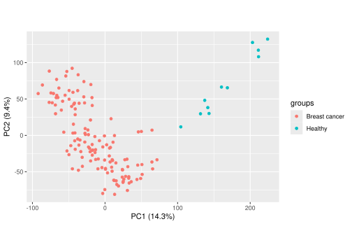
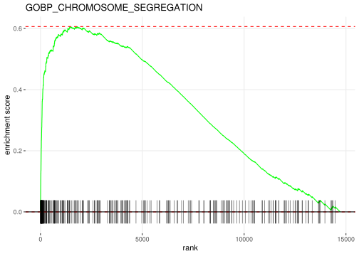

library(GEOquery)
library(tidyverse)Network Analysis
Load Data
Load Libraries
Load Raw Data
if (!dir.exists("../data/_raw")) {
dir.create("../data/_raw", recursive = TRUE)
}
raw_file <- "../data/_raw/GSE45827.RData"
if (!file.exists(raw_file)) {
gse <- getGEO("GSE45827", GSEMatrix = TRUE)
save(gse, file = raw_file)
} else {
load(raw_file)
}Split Raw Data into 3 main Data Frames
Gene expression Data
Sample Metadata
Gene Metadata
exprSet <- gse[[1]]
expr_data <- exprs(exprSet)
pheno_data <- pData(exprSet)
feature_data <- fData(exprSet)Save Data Frames into csv files
write.csv(expr_data, "../data/GSE45827_expression.csv")
write.csv(pheno_data, "../data/GSE45827_Phenotype_metadata.csv")
write.csv(feature_data, "../data/GSE45827_Feature_metadata.csv")Clean Data
Load Libraries
library(tidyr)
library(dplyr)Load Data
expr_data <- read.csv("../data/GSE45827_expression.csv", row.names = 1)
feature_data <- read.csv("../data/GSE45827_Feature_metadata.csv", row.names = 1)
pheno_data <- read.csv("../data/GSE45827_Phenotype_metadata.csv", row.names = 1)Phenotype Data Cleaning
cell_lines <- pheno_data |> filter(`source_name_ch1` == "Human CellLine")
pheno_data <- pheno_data |> filter(`source_name_ch1` != "Human CellLine")pheno_data <- pheno_data |>
select("diagnosis.ch1", "tumor.subtype.ch1") |>
mutate(`diagnosis.ch1` = if_else(`diagnosis.ch1` == "None (normal)", "Healthy", `diagnosis.ch1`)) |>
mutate(`tumor.subtype.ch1` = if_else(`tumor.subtype.ch1` == "N/A", "Healthy",`tumor.subtype.ch1`)) |>
rename("diagnosis" ="diagnosis.ch1",
"subtype" = "tumor.subtype.ch1") |>
mutate(diagnosis = factor(diagnosis),
subtype = factor(subtype))
head(pheno_data) diagnosis subtype
GSM1116084 Breast cancer Basal
GSM1116085 Breast cancer Basal
GSM1116086 Breast cancer Her2
GSM1116087 Breast cancer Basal
GSM1116088 Breast cancer Her2
GSM1116089 Breast cancer Her2Feature Data Cleaning
missing_geneIDs <- (feature_data |> filter(`ENTREZ_GENE_ID` == ""))$IDfeature_data <- feature_data |>
select("Gene.Symbol", "Gene.Title", "ENTREZ_GENE_ID") |>
filter(`ENTREZ_GENE_ID` != "")
head(feature_data) Gene.Symbol
1007_s_at DDR1 /// MIR4640
1053_at RFC2
117_at HSPA6
1294_at MIR5193 /// UBA7
1316_at THRA
1405_i_at CCL5
Gene.Title
1007_s_at discoidin domain receptor tyrosine kinase 1 /// microRNA 4640
1053_at replication factor C (activator 1) 2, 40kDa
117_at heat shock 70kDa protein 6 (HSP70B')
1294_at microRNA 5193 /// ubiquitin-like modifier activating enzyme 7
1316_at thyroid hormone receptor, alpha
1405_i_at chemokine (C-C motif) ligand 5
ENTREZ_GENE_ID
1007_s_at 780 /// 100616237
1053_at 5982
117_at 3310
1294_at 7318 /// 100847079
1316_at 7067
1405_i_at 6352Gene Expression Data Cleaning
expr_data <- expr_data |> select(-cell_lines$geo_accession)
expr_data <- expr_data[!(rownames(expr_data) %in% missing_geneIDs), ]head(expr_data) GSM1116084 GSM1116085 GSM1116086 GSM1116087 GSM1116088 GSM1116089
1007_s_at 9.47065 9.67440 10.20800 10.11420 11.16360 10.00690
1053_at 8.36311 8.72194 7.78601 9.44537 7.71242 7.84274
117_at 5.95426 7.02523 6.39671 4.56023 5.29008 6.21590
1294_at 6.02119 7.24581 6.85310 5.42786 7.51120 5.79719
1316_at 3.22997 3.29352 3.26204 3.34766 3.59086 3.40108
1405_i_at 10.82220 9.29455 9.45727 11.51270 8.83075 9.07636
GSM1116090 GSM1116091 GSM1116092 GSM1116093 GSM1116094 GSM1116095
1007_s_at 9.53932 9.00187 6.54074 10.35510 10.03780 10.64580
1053_at 7.56238 8.01540 9.37874 9.45426 8.09954 8.21743
117_at 6.42180 6.23554 5.43541 3.85652 6.14728 4.53397
1294_at 7.36700 7.17268 7.72472 4.79560 7.16894 6.62358
1316_at 3.27663 3.14212 3.28420 3.27900 3.20978 3.76888
1405_i_at 10.99010 11.15940 9.05848 3.90108 11.01210 10.27710
GSM1116096 GSM1116097 GSM1116098 GSM1116099 GSM1116100 GSM1116101
1007_s_at 10.44950 8.37233 9.48393 10.14140 10.23970 8.60988
1053_at 8.47638 7.84711 8.50635 7.92972 8.21145 8.33146
117_at 5.34788 5.71406 8.07714 5.91339 4.60687 8.02299
1294_at 6.34457 6.70367 7.73885 5.75826 4.27389 7.41340
1316_at 4.29495 3.25288 3.26944 3.15866 5.43945 3.25189
1405_i_at 9.25481 11.68160 10.81010 9.70204 6.32607 12.07530
GSM1116102 GSM1116103 GSM1116104 GSM1116105 GSM1116106 GSM1116107
1007_s_at 9.30953 10.11580 10.22820 10.93370 10.45010 10.77400
1053_at 6.61467 8.24303 7.64069 7.84357 6.66872 7.73258
117_at 6.03981 5.21013 6.39396 5.28530 5.93382 6.65636
1294_at 5.75151 7.16413 6.68933 5.86029 7.33326 6.76149
1316_at 3.25374 3.26923 3.31252 5.20997 3.38905 4.68509
1405_i_at 9.49139 11.16260 10.97000 8.03392 9.47221 10.10680
GSM1116108 GSM1116109 GSM1116110 GSM1116111 GSM1116112 GSM1116113
1007_s_at 9.09858 9.82919 9.76393 9.71049 9.63422 9.32985
1053_at 8.49295 8.04391 9.21119 7.94075 8.60913 9.05156
117_at 7.89833 6.25110 6.20520 6.67730 6.80008 6.02124
1294_at 7.40775 7.80644 7.27217 7.21996 7.01729 5.49913
1316_at 3.38779 3.44371 3.21386 3.46664 3.36358 3.51126
1405_i_at 9.27153 12.08370 9.22943 13.18300 8.84037 8.63069
GSM1116114 GSM1116115 GSM1116116 GSM1116117 GSM1116118 GSM1116119
1007_s_at 9.13237 10.21230 10.63470 10.19650 10.24290 9.60890
1053_at 7.59912 8.06179 7.61327 7.79566 8.78981 7.23565
117_at 6.51987 5.56796 5.73829 4.46156 6.21806 6.28429
1294_at 7.48972 7.37151 6.31337 6.78600 4.28586 6.41148
1316_at 3.46957 3.50170 3.49541 3.37617 3.29193 3.30101
1405_i_at 10.45860 11.22110 9.28118 8.79246 6.47523 7.82935
GSM1116120 GSM1116121 GSM1116122 GSM1116123 GSM1116124 GSM1116125
1007_s_at 9.32680 10.51060 10.56970 10.14730 8.34806 9.40561
1053_at 9.35174 7.78091 7.88528 7.39454 8.37482 9.00709
117_at 7.68198 6.02321 5.65715 5.87484 9.14238 6.95742
1294_at 6.12185 7.75981 5.18566 4.53755 7.56331 5.64746
1316_at 3.46059 3.42653 3.27581 3.41536 3.00087 3.50872
1405_i_at 10.30090 9.90023 7.87248 5.74762 11.55320 7.60097
GSM1116126 GSM1116127 GSM1116128 GSM1116129 GSM1116130 GSM1116131
1007_s_at 10.56410 9.73944 11.17040 9.72613 10.91060 8.60770
1053_at 7.68875 7.48572 8.39529 7.56226 8.89892 9.25822
117_at 3.85010 5.27981 4.83188 6.01448 5.93541 5.89744
1294_at 4.60215 6.02859 5.25828 6.97893 7.25988 6.91073
1316_at 3.35819 3.45760 3.55184 3.53388 3.45018 3.44218
1405_i_at 7.68352 8.54279 8.30117 9.83481 11.94790 11.02720
GSM1116132 GSM1116133 GSM1116134 GSM1116135 GSM1116136 GSM1116137
1007_s_at 10.38040 10.38110 9.81215 9.46771 9.67632 11.02460
1053_at 8.14164 8.61716 8.19241 9.16920 7.79396 7.37765
117_at 6.18358 5.85304 5.95543 7.70911 6.81969 3.69656
1294_at 7.22719 6.23028 7.06389 6.98866 7.60068 5.94035
1316_at 3.55619 3.43374 3.36207 3.46215 3.43788 3.47543
1405_i_at 9.95795 10.16090 9.73054 9.94269 13.15470 8.46334
GSM1116138 GSM1116139 GSM1116140 GSM1116141 GSM1116142 GSM1116143
1007_s_at 10.72650 9.75026 10.02410 10.34230 11.15420 11.03680
1053_at 9.03221 8.50789 8.29344 8.46184 8.13731 7.92881
117_at 4.36727 6.00113 7.07612 4.60736 5.55893 5.45299
1294_at 5.39965 6.57596 8.27016 6.90693 6.27358 7.08893
1316_at 3.46998 3.43276 3.40720 3.54718 3.41575 3.53040
1405_i_at 5.83059 9.06461 10.07030 9.54387 9.85074 9.44319
GSM1116144 GSM1116145 GSM1116146 GSM1116147 GSM1116148 GSM1116149
1007_s_at 9.45143 10.43290 10.34100 10.00610 9.18151 9.82593
1053_at 7.88506 7.60771 8.44041 8.15492 7.85672 8.63647
117_at 5.94825 5.96213 4.84830 5.97218 6.99499 6.10333
1294_at 7.18415 5.49201 8.34065 8.22314 7.66849 4.42144
1316_at 3.47865 3.44486 3.45237 3.66663 3.45032 3.41282
1405_i_at 9.69099 10.88730 6.90163 11.92430 13.12450 4.37651
GSM1116150 GSM1116151 GSM1116152 GSM1116153 GSM1116154 GSM1116169
1007_s_at 10.60630 10.00750 10.61570 10.40530 9.88982 9.35983
1053_at 8.47677 7.14085 7.82552 7.89417 8.18059 5.64109
117_at 7.45326 6.98528 6.52667 3.65791 5.86942 4.99282
1294_at 7.32962 6.67545 6.29934 3.89667 7.31286 8.90312
1316_at 3.38273 3.51544 3.43433 3.46764 6.05066 5.64136
1405_i_at 10.05190 9.71083 8.17840 4.61677 8.95093 7.72109
GSM1116170 GSM1116171 GSM1116172 GSM1116173 GSM1116174 GSM1116175
1007_s_at 8.92862 8.51747 9.90086 9.99184 9.80457 10.12430
1053_at 4.97958 5.62614 6.74438 5.70238 6.54442 5.86945
117_at 3.40532 4.93056 4.49811 3.20804 3.37099 3.77733
1294_at 8.82710 7.60378 8.27273 8.02270 8.54070 7.56151
1316_at 4.93700 4.35846 3.49625 4.48971 3.83661 4.31389
1405_i_at 8.30833 6.77847 9.99734 8.51383 7.61147 7.86122
GSM1116176 GSM1116177 GSM1116178 GSM1116179 GSM1116180 GSM1116181
1007_s_at 9.29848 9.56321 9.96914 9.34603 9.25581 9.65648
1053_at 5.25887 5.95661 5.45792 5.59836 7.42271 7.03281
117_at 4.46238 4.52445 3.14352 4.68036 5.90116 5.01108
1294_at 8.28166 7.74364 8.29586 8.61736 6.39339 7.75967
1316_at 5.43182 4.06242 4.57299 4.32659 3.31515 3.34000
1405_i_at 10.42320 7.95438 8.82569 8.95082 8.82882 10.15770
GSM1116182 GSM1116183 GSM1116184 GSM1116185 GSM1116186 GSM1116187
1007_s_at 10.69700 9.40894 9.67101 10.23830 10.98810 10.27890
1053_at 6.50217 8.05199 6.70343 7.57718 7.55192 7.39894
117_at 4.74508 4.98127 4.26019 5.84402 8.00253 4.94541
1294_at 8.36900 7.78085 6.79128 7.97305 5.53963 7.72522
1316_at 3.88383 3.77328 3.14845 3.09275 3.09580 3.09989
1405_i_at 9.73859 10.05880 7.23410 10.36570 7.94184 7.28429
GSM1116188 GSM1116189 GSM1116190 GSM1116191 GSM1116192 GSM1116193
1007_s_at 10.76200 10.89270 9.26293 9.79335 11.46010 10.16940
1053_at 6.64115 7.70086 7.22615 6.79832 7.28488 8.05798
117_at 5.96162 5.87287 5.41029 5.41365 3.95833 7.57243
1294_at 8.20000 5.21315 7.92009 5.79406 6.81766 7.10004
1316_at 3.64292 3.11153 3.42857 3.55201 4.36604 3.47430
1405_i_at 10.00680 7.58043 10.30670 8.30816 5.10893 5.79861
GSM1116194 GSM1116195 GSM1116196 GSM1116197 GSM1116198 GSM1116199
1007_s_at 9.68111 9.23725 10.37060 10.83540 10.59460 10.99180
1053_at 6.84965 7.29869 7.45002 7.79156 7.68441 6.88320
117_at 5.70363 4.10106 6.13145 5.73012 6.04729 5.63173
1294_at 7.59827 7.23315 7.32834 7.67770 8.44960 8.54789
1316_at 3.25987 3.21713 3.35170 3.37411 4.31510 3.56032
1405_i_at 8.25211 8.69420 8.77493 8.18677 7.95585 7.43344
GSM1116200 GSM1116201 GSM1116202 GSM1116203 GSM1116204 GSM1116205
1007_s_at 10.79090 10.62090 10.09620 10.75440 10.40590 10.21630
1053_at 6.40945 8.19011 7.51218 7.12197 7.15877 7.06667
117_at 5.61878 4.92947 4.83212 6.28205 5.57738 4.66778
1294_at 7.72629 6.83900 7.69850 8.06425 7.38860 7.66124
1316_at 3.54930 3.86601 3.39656 3.53381 3.42532 3.45824
1405_i_at 8.93008 8.05753 11.08530 9.05865 9.05033 8.42317
GSM1116206 GSM1116207 GSM1116208 GSM1116209 GSM1116210 GSM1116211
1007_s_at 10.52240 10.86100 10.08800 9.83567 10.87340 9.66704
1053_at 7.51896 8.13146 6.99632 6.67889 7.33159 7.62965
117_at 4.79932 5.16531 4.51390 6.13449 5.10775 7.89241
1294_at 6.96686 6.02907 6.32999 7.39462 7.72787 7.93732
1316_at 2.71935 3.76245 3.40397 3.20680 3.29536 3.28591
1405_i_at 3.10081 8.80312 6.75887 8.75712 9.76065 11.08520
GSM1116212 GSM1116213 GSM1116214 GSM1116215 GSM1116216 GSM1116217
1007_s_at 9.90649 10.09700 10.62790 10.47760 10.72790 11.10140
1053_at 7.00497 6.99333 8.35771 7.08194 6.84023 7.25026
117_at 6.65585 5.75165 7.25363 6.55543 6.29517 4.81102
1294_at 5.11427 6.85385 6.87828 5.77793 7.78182 7.12204
1316_at 3.22342 3.27224 4.42596 4.64599 3.26699 3.22369
1405_i_at 5.09954 5.54300 8.36752 6.91176 5.68833 7.36957
GSM1116218 GSM1116219 GSM1116220 GSM1116221 GSM1116222 GSM1116223
1007_s_at 10.33500 10.84180 9.67831 10.70170 10.55280 10.33530
1053_at 7.39641 7.36747 6.91589 5.68589 6.08820 7.35386
117_at 6.32739 6.09316 5.47914 4.42508 6.89790 5.32343
1294_at 7.36391 7.71262 6.74362 7.21228 8.56077 7.24038
1316_at 3.36470 3.52831 3.53458 3.64618 3.34790 3.39311
1405_i_at 7.16191 10.12290 5.93992 6.99717 10.92980 8.09043
GSM1116224 GSM1116225 GSM1116226 GSM1116227 GSM1116228 GSM1116229
1007_s_at 10.29450 11.09440 10.76850 9.95321 10.22810 9.96811
1053_at 7.20402 7.31024 8.18165 7.38766 6.96242 7.25745
117_at 5.91998 5.48543 5.67256 6.54564 6.46595 8.35832
1294_at 8.17657 7.31011 6.90715 8.54326 7.52390 7.18591
1316_at 3.88391 3.62851 3.55888 3.58091 3.39838 3.50312
1405_i_at 9.85975 4.42757 6.36115 13.06410 9.40301 8.25920
GSM1116230 GSM1116231 GSM1116232 GSM1116233 GSM1116234 GSM1116235
1007_s_at 10.10680 10.03290 9.84599 10.75850 10.55470 9.45290
1053_at 7.54377 7.41607 5.83454 8.83376 6.88277 6.83700
117_at 6.98743 4.50611 4.78051 4.55847 4.14597 6.10766
1294_at 7.74070 7.44448 7.03001 6.87039 6.37882 6.99674
1316_at 3.57309 3.31572 3.70289 4.82208 3.55309 3.23899
1405_i_at 8.46990 7.32929 7.18265 8.87394 6.36287 9.56499
GSM1116236 GSM1116237 GSM1116238
1007_s_at 10.80010 10.04640 11.42010
1053_at 7.29371 7.71122 7.63877
117_at 5.41169 4.57742 4.67159
1294_at 8.37598 6.56774 7.40374
1316_at 3.84879 3.28091 3.24882
1405_i_at 8.11443 8.07087 8.44304Save Clean Data
write.csv(expr_data, "../data/GSE45827_clean_expression.csv")
write.csv(pheno_data, "../data/GSE45827_clean_Phenotype_metadata.csv")
write.csv(feature_data, "../data/GSE45827_clean_Feature_metadata.csv")Describe Data
Load Libraries
library(dplyr)Load Data
expr_data <- read.csv("../data/GSE45827_clean_expression.csv", row.names = 1)
feature_data <- read.csv("../data/GSE45827_clean_Feature_metadata.csv", row.names = 1)
pheno_data <- read.csv("../data/GSE45827_clean_Phenotype_metadata.csv", row.names = 1)Gene Expression Data
Columns: Samples
Rows: Genes
expr_data[1:10,1:10] GSM1116084 GSM1116085 GSM1116086 GSM1116087 GSM1116088 GSM1116089
1007_s_at 9.47065 9.67440 10.20800 10.11420 11.16360 10.00690
1053_at 8.36311 8.72194 7.78601 9.44537 7.71242 7.84274
117_at 5.95426 7.02523 6.39671 4.56023 5.29008 6.21590
1294_at 6.02119 7.24581 6.85310 5.42786 7.51120 5.79719
1316_at 3.22997 3.29352 3.26204 3.34766 3.59086 3.40108
1405_i_at 10.82220 9.29455 9.45727 11.51270 8.83075 9.07636
1438_at 4.39698 6.68936 5.46440 5.29748 6.81821 5.10469
1487_at 6.65320 7.20820 6.68974 6.87276 6.45744 6.87822
1552256_a_at 10.91320 9.32204 7.73131 10.39210 7.05836 7.89627
1552257_a_at 10.07510 9.34476 8.43573 9.63893 9.37463 8.27604
GSM1116090 GSM1116091 GSM1116092 GSM1116093
1007_s_at 9.53932 9.00187 6.54074 10.35510
1053_at 7.56238 8.01540 9.37874 9.45426
117_at 6.42180 6.23554 5.43541 3.85652
1294_at 7.36700 7.17268 7.72472 4.79560
1316_at 3.27663 3.14212 3.28420 3.27900
1405_i_at 10.99010 11.15940 9.05848 3.90108
1438_at 5.05443 6.87350 5.20408 8.83710
1487_at 6.67559 6.31095 6.88597 6.93847
1552256_a_at 8.51650 9.34351 8.62752 10.22550
1552257_a_at 7.45211 9.68665 8.50533 9.30071Number of Genes
nrow(expr_data)[1] 26468Number of Samples
ncol(expr_data)[1] 141Feature Data Description
head(feature_data) Gene.Symbol
1007_s_at DDR1 /// MIR4640
1053_at RFC2
117_at HSPA6
1294_at MIR5193 /// UBA7
1316_at THRA
1405_i_at CCL5
Gene.Title
1007_s_at discoidin domain receptor tyrosine kinase 1 /// microRNA 4640
1053_at replication factor C (activator 1) 2, 40kDa
117_at heat shock 70kDa protein 6 (HSP70B')
1294_at microRNA 5193 /// ubiquitin-like modifier activating enzyme 7
1316_at thyroid hormone receptor, alpha
1405_i_at chemokine (C-C motif) ligand 5
ENTREZ_GENE_ID
1007_s_at 780 /// 100616237
1053_at 5982
117_at 3310
1294_at 7318 /// 100847079
1316_at 7067
1405_i_at 63525 Columns:
colnames(feature_data)[1] "Gene.Symbol" "Gene.Title" "ENTREZ_GENE_ID"Representative.Public.ID: Probe ID from the microarray platform
Gene.Symbol: The official gene symbol, following HUGO Gene Nomenclature Committee (HGNC) naming
Gene.Title: A longer, human-readable description of the gene.
ENTREZ_GENE_ID: The NCBI Entrez Gene identifier (A unique numeric ID for each gene)
RefSeq.Transcript.ID: One or more RefSeq transcript accession numbers that correspond to the gene or probe.
Number of Genes
nrow(feature_data)[1] 26468Phenotype Data Description
head(pheno_data) diagnosis subtype
GSM1116084 Breast cancer Basal
GSM1116085 Breast cancer Basal
GSM1116086 Breast cancer Her2
GSM1116087 Breast cancer Basal
GSM1116088 Breast cancer Her2
GSM1116089 Breast cancer Her22 Columns:
colnames(pheno_data)[1] "diagnosis" "subtype" Diagnosis: Breast cancer or healthy sample
Subtype: Breast cancer subtype
Number of Samples
nrow(pheno_data)[1] 141Distribution of Diagnosis Values
pheno_data |> count(diagnosis) diagnosis n
1 Breast cancer 130
2 Healthy 11Distribution of Cancer Subtype Values
pheno_data |> count(subtype) subtype n
1 Basal 41
2 Healthy 11
3 Her2 30
4 Luminal A 29
5 Luminal B 30PCA Analysis
Load Libraries
library(tidyverse)
library(ggbiplot)
library(devtools)Load Data
expr_data <- read.csv("../data/GSE45827_clean_expression.csv", row.names = 1)
pheno_data <- read.csv("../data/GSE45827_clean_Phenotype_metadata.csv", row.names = 1)PCA Calculation And Plotting
Format data for PCA
transp_expr <- t(expr_data) |> data.frame()
transp_expr <- transp_expr |>
mutate(diagnosis = pheno_data$diagnosis)
transp_expr <- transp_expr |>
mutate(subtype = pheno_data$subtype)
expr_only <- transp_expr |> select(-subtype, -diagnosis)Perform PCA
pc <- prcomp(expr_only, center = TRUE, scale. = TRUE)PCA: Cancer vs Healthy
ggbiplot(pc,
obs.scale = 1,
var.scale = 1,
groups = transp_expr$diagnosis,
var.axes = FALSE)
PCA: By Cancer Subtype
ggbiplot(pc,
obs.scale = 1,
var.scale = 1,
groups = transp_expr$subtype,
var.axes = FALSE)
Data Analysis
PCA Plots are a tool for visualizing high dimensional data onto an orthogonal basis so that the first principal component (PC, aka the “axis”) is aligned with the largest source of variance, and then the second PC is aligned with the second largest source of variance etc. This is used to visualize and identify underlying patterns within the data.
The second plot shows us which samples are similar in terms of their gene expression, and which ones are different, which reveals clusters of similarly behaving gene expression. As the coloring shows, the tumour subtypes are plotted in certain area of the graph. This means, there are patterns of gene expression within one subtype that differ generally from other subtypes. This proves clinic significance of the subtypes and enforces further analysis of the gene expression behavior.
The first graph shows the more general plot and instead of plotting for all the different subtypes of tumor, we are looking at the genes that are highly expressed in all the breast cancers vs in normal cells, and colored based on these two variables.
Differential Gene Expression Analysis
Load Libraries
library(limma)
library(dplyr)
library(msigdbr)
library(fgsea)
library(DESeq2)
library(purrr)
library(ggplot2)Load Data
expr_data <- read.csv(
"../data/GSE45827_clean_expression.csv",
row.names = 1
)
feature_data <- read.csv(
"../data/GSE45827_clean_Feature_metadata.csv",
row.names = 1
)
pheno_data <- read.csv(
"../data/GSE45827_clean_Phenotype_metadata.csv",
row.names = 1
)Linear Modeling and Differential Expression Analysis
groups <- as.factor(pheno_data$subtype)
design <- model.matrix(~ 0 + groups)
clean_levels <- make.names(levels(groups))
colnames(design) <- clean_levels
fit <- lmFit(expr_data, design)
contrast_matrix <- makeContrasts(
Basal_vs_Her2 = Basal - Her2,
Basal_vs_LumA = Basal - Luminal.A,
Her2_vs_LumA = Her2 - Luminal.A,
LumA_vs_LumB = Luminal.A - Luminal.B,
levels = design
)
fit_contrast <- contrasts.fit(fit, contrast_matrix)
fit_ebayes <- eBayes(fit_contrast)
print(summary(decideTests(fit_ebayes))) Basal_vs_Her2 Basal_vs_LumA Her2_vs_LumA LumA_vs_LumB
Down 4214 7551 5390 3478
NotSig 17359 10767 15936 19817
Up 4895 8150 5142 3173Preparing the Gene List
top_table <- topTable(fit_ebayes, coef = "Basal_vs_LumA", number = Inf)
head(top_table) logFC AveExpr t P.Value adj.P.Val B
210052_s_at 5.406121 7.369013 22.76376 9.494968e-49 2.513128e-44 100.32266
209408_at 5.077893 6.022339 21.79878 1.059288e-46 1.401861e-42 95.67803
209464_at 4.139424 5.469734 21.15724 2.595258e-45 2.289710e-41 92.52381
206364_at 4.744102 7.470250 21.06249 4.180713e-45 2.766378e-41 92.05345
219918_s_at 5.210790 7.748509 20.18735 3.606759e-43 1.909274e-39 87.65373
204962_s_at 4.973160 6.729938 20.14428 4.502934e-43 1.986394e-39 87.43458top_table$probe_id <- rownames(top_table)
probe_to_gene_map <- data.frame(
probe_id = rownames(feature_data),
gene_symbol = feature_data$"Gene.Symbol" )
res_with_symbols <- merge(top_table, probe_to_gene_map, by="probe_id")
res_with_symbols <- res_with_symbols %>%
filter(!is.na(t) & !is.na(gene_symbol) & gene_symbol != "")
res_ranked <- res_with_symbols %>%
group_by(gene_symbol) %>%
slice_max(order_by = abs(t), n = 1) %>%
ungroup()
stats <- res_ranked$t
names(stats) <- res_ranked$gene_symbol
stats <- sort(stats, decreasing = TRUE)
head(stats) TPX2 KIF2C AURKB KIF14
22.76376 21.79878 21.15724 21.06249
ASPM CENPA /// SLC35F6
20.18735 20.14428 Running GSEA
BP_df <- msigdbr(species = "human", category = "C5", subcategory = "BP")
pathways <- split(BP_df$gene_symbol, f = BP_df$gs_name)
fgseaRes <- fgseaMultilevel(
pathways = pathways,
stats = stats,
minSize = 15,
maxSize = 500
)
print("Top GSEA results (Basal_vs_LumA):")[1] "Top GSEA results (Basal_vs_LumA):"head(fgseaRes[order(padj), ]) pathway pval padj log2err
<char> <num> <num> <num>
1: GOBP_CHROMOSOME_SEGREGATION 8.820515e-40 3.181560e-36 1.640742
2: GOBP_ORGANELLE_FISSION 7.222175e-38 1.302519e-34 1.602431
3: GOBP_NUCLEAR_CHROMOSOME_SEGREGATION 3.936871e-36 4.733431e-33 1.563182
4: GOBP_MITOTIC_NUCLEAR_DIVISION 1.895577e-32 1.709337e-29 1.481568
5: GOBP_SISTER_CHROMATID_SEGREGATION 1.473758e-31 1.063169e-28 1.460452
6: GOBP_MITOTIC_SISTER_CHROMATID_SEGREGATION 4.080198e-30 2.452879e-27 1.424563
ES NES size leadingEdge
<num> <num> <int> <list>
1: 0.6064707 3.238701 273 KIF2C, A....
2: 0.5389512 3.006860 382 TPX2, KI....
3: 0.6262546 3.232082 219 KIF2C, A....
4: 0.5812431 3.066768 254 TPX2, KI....
5: 0.6462065 3.218662 173 KIF2C, A....
6: 0.6635166 3.224277 150 KIF2C, A....The Enrichment Plot
fgseaRes_ordered <- fgseaRes[order(padj), ]
top_pathway_name <- fgseaRes_ordered$pathway[1]
leading_edge_genes <- fgseaRes_ordered$leadingEdge[[1]]
first_genes <- head(leading_edge_genes,10)
print(first_genes) [1] "KIF2C" "AURKB" "KIF14" "CEP55" "BUB1" "FAM83D" "CDC20" "TTK"
[9] "MKI67" "CENPF" plotEnrichment(pathways[[top_pathway_name]],
stats = stats) +
labs(title = top_pathway_name)
Getting the Top Genes
top_5_gene_lists <- fgseaRes_ordered$leadingEdge[1:5]
top_5_names <- fgseaRes_ordered$pathway[1:5]
for (i in 1:5) {
print(head(top_5_gene_lists[[i]], 10))
} [1] "KIF2C" "AURKB" "KIF14" "CEP55" "BUB1" "FAM83D" "CDC20" "TTK"
[9] "MKI67" "CENPF"
[1] "TPX2" "KIF2C" "AURKB" "KIF14" "ASPM" "CEP55" "BUB1" "CDC20" "TTK"
[10] "MKI67"
[1] "KIF2C" "AURKB" "KIF14" "CEP55" "BUB1" "FAM83D" "CDC20" "TTK"
[9] "CENPF" "CDCA5"
[1] "TPX2" "KIF2C" "AURKB" "KIF14" "CEP55" "BUB1" "CDC20" "TTK" "MKI67"
[10] "CENPF"
[1] "KIF2C" "AURKB" "KIF14" "CEP55" "BUB1" "CDC20" "TTK" "CENPF" "CDCA5"
[10] "NDC80"Intersection Analysis of Core Enrichment Genes
core_drivers <- Reduce(intersect, top_5_gene_lists)
all_genes_flat <- unlist(top_5_gene_lists)
gene_counts <- table(all_genes_flat)
gene_counts_sorted <- sort(gene_counts, decreasing = TRUE)
res <- gene_counts_sorted[gene_counts_sorted >= 3]
resall_genes_flat
AURKB BAZ1B BUB1 BUB1B CCNB1 CDC20 CDC6 CDCA5 CDCA8 CDT1
5 5 5 5 5 5 5 5 5 5
CENPE CENPF CENPK CEP55 CHMP4B CHTF8 DLGAP5 DSCC1 DSN1 EML4
5 5 5 5 5 5 5 5 5 5
ESPL1 FBXO5 GEN1 KATNB1 KIF14 KIF18A KIF18B KIF23 KIF2C KIF4A
5 5 5 5 5 5 5 5 5 5
KIFC1 KNSTRN KNTC1 MAD2L1 MAD2L2 NAA10 NAA50 NCAPD2 NCAPD3 NCAPG
5 5 5 5 5 5 5 5 5 5
NCAPG2 NCAPH NCAPH2 NDC80 NEK2 NUF2 NUP62 NUSAP1 PLK1 PRC1
5 5 5 5 5 5 5 5 5 5
PSRC1 PTTG1 RACGAP1 RAD21 RAN RRS1 SEH1L SMC1A SMC2 SMC4
5 5 5 5 5 5 5 5 5 5
SPAG5 SPDL1 TACC3 TRIP13 TTK TUBG1 UBE2C VPS4A ZWILCH ZWINT
5 5 5 5 5 5 5 5 5 5
HORMAD1 TOP2A ACTR2 ACTR3 BRIP1 CCNE1 CCNE2 CDCA2 DDX11 EME1
4 4 3 3 3 3 3 3 3 3
FANCD2 FEN1 MCMBP MKI67 NDC1 NDE1 PSMC3IP RCC1 RMI1 RMI2
3 3 3 3 3 3 3 3 3 3 Saving Results
fgseaRes_flat <- fgseaRes
fgseaRes_flat$leadingEdge <- sapply(fgseaRes_flat$leadingEdge, paste, collapse = "; ")
write.csv(fgseaRes_flat, "../data/Top_GSEA_results_Basal_vs_LumA.csv", row.names = FALSE)
top_5_gene_df <- map_dfr(top_5_gene_lists, ~as.data.frame(t(.x), .id="id"))
write.csv(top_5_gene_df, "../data/Genes_from_Top_5_pathways.csv")
write.csv(res, "../data/Intersected_Genes.csv", row.names = FALSE)
library(ggplot2)
my_plot <- plotEnrichment(pathways[[top_pathway_name]], stats = stats) +
labs(title = top_pathway_name)
ggsave(filename = "../results/Intersected_Genes_Plot.png",
plot = my_plot,
width = 8,
height = 6)Network Analysis
Load Libraries
library("GEOquery")
library("Biobase")
library("limma")
library("dplyr")
library("tibble")
library("stringr")
library("readr")
library("igraph")
library("msigdbr")
library("clusterProfiler")
library("Matrix")
library("quarto")Load Data
expr_data <- read.csv(
"../data/GSE45827_clean_expression.csv",
row.names = 1
)
feature_data <- read.csv(
"../data/GSE45827_clean_Feature_metadata.csv"
)
names(feature_data)[1] <- "ProbeID"
pheno_data <- read.csv(
"../data/GSE45827_clean_Phenotype_metadata.csv",
)
names(pheno_data)[1] <- "SampleID"Set output directory
output_dir <- "../results"Differential Expression Analysis
Analysis is performed using limma. It involves a linear model that is fitted for the Tumor vs Normal contrast and empirical Bayes shrinkage which is applied to stabilize variance estimates. All tested genes are carried forward to the network analysis, while significantly differentiated ones (e.g. FDR < 0.05 and |logFC| > 1) are later used as seed genes to anchor subnetworks.
Set up Model
design_all <- model.matrix(
~ diagnosis,
data = pheno_data
)Fit model
fit_all <- expr_data |>
lmFit(design_all) |>
eBayes()Get Results
tt_tumor_vs_normal <- topTable(
fit_all,
coef = "diagnosisHealthy",
number = Inf,
sort.by = "P"
)
head(tt_tumor_vs_normal) logFC AveExpr t P.Value adj.P.Val B
211565_at 6.357343 2.569430 52.42703 9.801966e-95 2.594384e-90 202.6620
243689_s_at 6.101876 3.115981 37.98376 3.261078e-76 4.315711e-72 162.1877
224012_at 4.961053 3.268422 31.44882 8.169992e-66 7.208112e-62 138.9671
238062_at 4.518850 2.634483 27.33766 2.118232e-58 1.401634e-54 122.2649
213715_s_at 2.845828 5.467643 27.16630 4.483468e-58 2.373368e-54 121.5290
1562527_at 5.331220 2.888688 26.74320 2.895354e-57 1.277237e-53 119.6975View Differential Expression Results
tt_tumor_vs_normal <- tt_tumor_vs_normal |>
rownames_to_column("ProbeID") |>
left_join(
feature_data |>
select(
ProbeID,
Gene.Symbol = `Gene.Symbol`
),
by = "ProbeID"
) |>
relocate(Gene.Symbol, .after = ProbeID)
head(tt_tumor_vs_normal) ProbeID Gene.Symbol logFC
1 211565_at SH3GL3 6.357343
2 243689_s_at FRG1B 6.101876
3 224012_at ANKRD20A1 /// ANKRD20A2 /// ANKRD20A3 /// ANKRD20A4 4.961053
4 238062_at GPIHBP1 4.518850
5 213715_s_at KANK3 2.845828
6 1562527_at LOC441666 5.331220
AveExpr t P.Value adj.P.Val B
1 2.569430 52.42703 9.801966e-95 2.594384e-90 202.6620
2 3.115981 37.98376 3.261078e-76 4.315711e-72 162.1877
3 3.268422 31.44882 8.169992e-66 7.208112e-62 138.9671
4 2.634483 27.33766 2.118232e-58 1.401634e-54 122.2649
5 5.467643 27.16630 4.483468e-58 2.373368e-54 121.5290
6 2.888688 26.74320 2.895354e-57 1.277237e-53 119.6975Number of significant genes (FDR<0.05, |logFC|>1):
sum(
tt_tumor_vs_normal$adj.P.Val < 0.05 &
abs(tt_tumor_vs_normal$logFC) > 1
)[1] 8134Save Results
DE_results <- list(
Tumor_vs_Normal = tt_tumor_vs_normal
)Network Analysis
Load Helper Functions
source("99_proj_func.R")Network Construction and Summary
We construct a Reactome co-membership network using gene–pathway incidence data. The edges reflect shared pathway membership and seed genes serve as anchors for selecting relevant subnetworks. After Louvain community detection, we extract the largest connected clusters and compute core network statistics including modules, hubs, and connectivity.
tag <- "Tumor_vs_Normal"
tt_gene <- collapse_to_genes(
DE_results[[tag]],
feature_data
)
universe_symbols <- tt_gene$symbol
head(universe_symbols)[1] "A1BG" "A1BG-AS1" "A2M" "A2M-AS1" "A2ML1" "A4GALT" sym2 <- tt_gene |>
select(
symbol,
logFC,
adj.P.Val
) |>
distinct()
head(sym2)# A tibble: 6 × 3
symbol logFC adj.P.Val
<chr> <dbl> <dbl>
1 A1BG 0.103 0.492
2 A1BG-AS1 0.174 0.160
3 A2M 1.41 0.0000117
4 A2M-AS1 0.134 0.557
5 A2ML1 -0.762 0.222
6 A4GALT 0.0642 0.377 seeds <- pick_seeds(
tt_gene,
fdr = 0.01,
lfc = 1.5
)
head(seeds)[1] "SH3GL3"
[2] "FRG1B"
[3] "ANKRD20A1 /// ANKRD20A2 /// ANKRD20A3 /// ANKRD20A4"
[4] "GPIHBP1"
[5] "KANK3"
[6] "LOC441666" Universe genes:
length(universe_symbols)[1] 14712Seed genes:
length(seeds)[1] 3626reactome_df <- msigdbr(
species = "Homo sapiens",
category = "C2",
subcategory = "REACTOME"
) |>
select(
gs_name,
gene_symbol
) |>
distinct() |>
filter(
gene_symbol %in% universe_symbols
)
head(reactome_df)# A tibble: 6 × 2
gs_name gene_symbol
<chr> <chr>
1 REACTOME_2_LTR_CIRCLE_FORMATION BANF1
2 REACTOME_2_LTR_CIRCLE_FORMATION HMGA1
3 REACTOME_2_LTR_CIRCLE_FORMATION LIG4
4 REACTOME_2_LTR_CIRCLE_FORMATION PSIP1
5 REACTOME_2_LTR_CIRCLE_FORMATION XRCC4
6 REACTOME_2_LTR_CIRCLE_FORMATION XRCC5 Reactome pathways covering universe:
length(unique(reactome_df$gs_name))[1] 1608genes <- sort(unique(reactome_df$gene_symbol))
paths <- sort(unique(reactome_df$gs_name))
gi <- match(reactome_df$gene_symbol, genes)
pi <- match(reactome_df$gs_name, paths)Make Adjacency Matrix
Inc <- sparseMatrix(
i = gi,
j = pi,
x = 1,
dims = c(length(genes), length(paths)),
dimnames = list(genes, paths)
)
Adj <- Inc %*% t(Inc)
diag(Adj) <- 0
min_shared <- 2
seed_idx <- which(rownames(Adj) %in% seeds)
nbr_raw <- Adj[seed_idx, , drop = FALSE] > 0
if (length(seed_idx) == 1) {
nbr_idx <- which(as.vector(nbr_raw))
} else {
nbr_idx <- unique(
unlist(
apply(
nbr_raw,
1,
which
)
)
)
}
nbr_idx <- unique(c(seed_idx, nbr_idx))
Adj_sub <- Adj[nbr_idx, nbr_idx, drop = FALSE]
A <- summary(Adj_sub)
A <- A[
A$i < A$j & A$x >= min_shared,
,
drop = FALSE
]Define Edges
edges <- tibble(
from = rownames(Adj_sub)[A$i],
to = rownames(Adj_sub)[A$j],
weight = as.numeric(A$x)
)Define Vertices
node_syms <- sort(unique(c(edges$from, edges$to)))Define Graph
g <- graph_from_data_frame(
d = edges,
vertices = tibble(symbol = node_syms),
directed = FALSE
)
V(g)$symbol <- V(g)$name
V(g)$seed <- V(g)$symbol %in% seeds
V(g)$logFC <- sym2$logFC[
match(V(g)$symbol, sym2$symbol)
]
V(g)$adj.P.Val <- sym2$adj.P.Val[
match(V(g)$symbol, sym2$symbol)
]
g <- igraph::simplify(
g,
remove.multiple = TRUE,
remove.loops = TRUE,
edge.attr.comb = list(weight = "sum")
)Get Clusters
com <- cluster_louvain(
g,
weights = E(g)$weight
)
V(g)$module <- membership(com)
comp <- components(g)
gc_id <- which.max(comp$csize)
g <- induced_subgraph(
g,
vids = which(comp$membership == gc_id)
)Final network - Nodes:
gorder(g)[1] 7231Edges:
gsize(g)[1] 1379925Modules detected:
length(unique(V(g)$module))[1] 12plot_net_modules_hubs(
g,
tag,
output_dir
)svg
2 hub_logical <- get_hub_logical(g, q = 0.90)
head(hub_logical) A1BG A2M AAAS AACS AADAT AAK1
FALSE FALSE TRUE FALSE FALSE FALSE nodes_out <- tibble(
symbol = V(g)$symbol,
hub = hub_logical,
seed = V(g)$seed,
module = V(g)$module,
degree = degree(g),
strength = strength(
g,
vids = V(g),
weights = E(g)$weight
),
betweenness = betweenness(
g,
directed = FALSE,
normalized = TRUE
),
logFC = V(g)$logFC,
adj.P.Val = V(g)$adj.P.Val
)
head(nodes_out)# A tibble: 6 × 9
symbol hub seed module degree strength betweenness logFC adj.P.Val
<chr> <lgl> <lgl> <dbl> <dbl> <dbl> <dbl> <dbl> <dbl>
1 A1BG FALSE FALSE 1 588 1392 0.0000380 0.103 0.492
2 A2M FALSE FALSE 2 409 1006 0.000360 1.41 0.0000117
3 AAAS TRUE FALSE 3 1902 7631 0.00561 -0.177 0.332
4 AACS FALSE FALSE 4 7 20 0 0.496 0.0719
5 AADAT FALSE FALSE 4 16 32 0.0000330 -0.366 0.245
6 AAK1 FALSE FALSE 5 553 1324 0.00000646 0.560 0.000544 mod_DE_info <- nodes_out |>
group_by(module) |>
summarise(
module_size = n(),
n_DE = sum(
adj.P.Val < 0.05,
na.rm = TRUE
),
.groups = "drop"
)
head(mod_DE_info)# A tibble: 6 × 3
module module_size n_DE
<dbl> <int> <int>
1 1 653 405
2 2 1163 741
3 3 474 373
4 4 821 526
5 5 761 576
6 6 777 534Network Statistics:
Total nodes:
gorder(g)[1] 7231Total edges:
gsize(g)[1] 1379925Seed nodes:
sum(V(g)$seed)[1] 2073Modules:
length(unique(V(g)$module))[1] 12Density:
edge_density(g)[1] 0.05278965Transitivity:
transitivity(g)[1] 0.44486Over-Representation Analysis (ORA)
To biologically interpret the network modules, we perform Reactome over-representation analysis. For each module, the most significantly enriched pathway is used as a representative label. This links graph-based communities to biological processes.
reactome_t2g <- msigdbr(
species = "Homo sapiens",
category = "C2",
subcategory = "REACTOME"
) |>
select(
term = gs_name,
gene = entrez_gene
) |>
distinct()
head(reactome_t2g)# A tibble: 6 × 2
term gene
<chr> <int>
1 REACTOME_2_LTR_CIRCLE_FORMATION 8815
2 REACTOME_2_LTR_CIRCLE_FORMATION 3159
3 REACTOME_2_LTR_CIRCLE_FORMATION 3981
4 REACTOME_2_LTR_CIRCLE_FORMATION 11168
5 REACTOME_2_LTR_CIRCLE_FORMATION 7518
6 REACTOME_2_LTR_CIRCLE_FORMATION 7520mods <- sort(unique(V(g)$module))
ora_results <- vector("list", length(mods))
names(ora_results) <- paste0("Module_", mods)for (i in seq_along(mods)) {
m <- mods[i]
mod_genes <- nodes_out$symbol[
nodes_out$module == m
]
res <- enrich_module(
genes_symbol = mod_genes,
universe_symbol = universe_symbols,
tag = tag,
mod_id = m,
output_dir = "."
)
ora_results[[i]] <- res
}
ora_results$Module_1
#
# over-representation test
#
#...@organism UNKNOWN
#...@ontology UNKNOWN
#...@gene chr [1:653] "1" "10057" "30" "176" "1636" "55331" "47" "10120" "100" ...
#...pvalues adjusted by 'BH' with cutoff <0.05
#...62 enriched terms found
'data.frame': 62 obs. of 12 variables:
$ ID : chr "REACTOME_NEUTROPHIL_DEGRANULATION" "REACTOME_GLYCOSAMINOGLYCAN_METABOLISM" "REACTOME_METABOLISM_OF_CARBOHYDRATES" "REACTOME_DISEASES_OF_METABOLISM" ...
$ Description : chr "REACTOME_NEUTROPHIL_DEGRANULATION" "REACTOME_GLYCOSAMINOGLYCAN_METABOLISM" "REACTOME_METABOLISM_OF_CARBOHYDRATES" "REACTOME_DISEASES_OF_METABOLISM" ...
$ GeneRatio : chr "263/653" "86/653" "127/653" "96/653" ...
$ BgRatio : chr "401/7857" "104/7857" "245/7857" "191/7857" ...
$ RichFactor : num 0.656 0.827 0.518 0.503 0.647 ...
$ FoldEnrichment: num 7.89 9.95 6.24 6.05 7.78 ...
$ zScore : num 42.6 27.7 25.1 21.3 22.1 ...
$ pvalue : num 3.50e-202 9.66e-77 2.07e-74 3.52e-54 2.89e-53 ...
$ p.adjust : num 1.26e-199 1.74e-74 2.50e-72 3.18e-52 2.09e-51 ...
$ qvalue : num 1.06e-199 1.46e-74 2.10e-72 2.67e-52 1.75e-51 ...
$ geneID : chr "1/30/47/10120/102/101/175/178/10555/210/221/226/230/272/196527/290/327/353/127829/25852/410/427/83858/23250/232"| __truncated__ "10057/176/375790/126792/26229/10678/10331/79369/93010/2683/11285/63827/633/960/57214/11261/79586/54480/8534/505"| __truncated__ "10057/176/178/375790/226/230/126792/26229/10678/10331/79369/93010/2683/11285/63827/633/960/57214/11261/79586/54"| __truncated__ "176/9510/81794/81792/140766/170689/170690/170691/170692/9509/9508/11096/11174/56999/92949/375790/126792/26229/2"| __truncated__ ...
$ Count : int 263 86 127 96 75 60 51 42 56 43 ...
#...Citation
S Xu, E Hu, Y Cai, Z Xie, X Luo, L Zhan, W Tang, Q Wang, B Liu, R Wang, W Xie, T Wu, L Xie, G Yu. Using clusterProfiler to characterize multiomics data. Nature Protocols. 2024, 19(11):3292-3320
$Module_2
#
# over-representation test
#
#...@organism UNKNOWN
#...@ontology UNKNOWN
#...@gene chr [1:1163] "2" "14" "18" "10257" "6833" "6059" "26090" "57406" "2532" ...
#...pvalues adjusted by 'BH' with cutoff <0.05
#...352 enriched terms found
'data.frame': 352 obs. of 12 variables:
$ ID : chr "REACTOME_SIGNALING_BY_GPCR" "REACTOME_SIGNALING_BY_INTERLEUKINS" "REACTOME_GPCR_LIGAND_BINDING" "REACTOME_G_ALPHA_I_SIGNALLING_EVENTS" ...
$ Description : chr "REACTOME_SIGNALING_BY_GPCR" "REACTOME_SIGNALING_BY_INTERLEUKINS" "REACTOME_GPCR_LIGAND_BINDING" "REACTOME_G_ALPHA_I_SIGNALLING_EVENTS" ...
$ GeneRatio : chr "290/1163" "279/1163" "178/1163" "160/1163" ...
$ BgRatio : chr "376/7857" "369/7857" "188/7857" "172/7857" ...
$ RichFactor : num 0.771 0.756 0.947 0.93 0.971 ...
$ FoldEnrichment: num 5.21 5.11 6.4 6.28 6.56 ...
$ zScore : num 34.9 33.7 31.2 29.2 27.4 ...
$ pvalue : num 3.24e-174 5.51e-163 2.96e-138 1.69e-120 4.28e-107 ...
$ p.adjust : num 2.62e-171 2.22e-160 7.96e-136 3.41e-118 6.91e-105 ...
$ qvalue : num 1.49e-171 1.27e-160 4.53e-136 1.95e-118 3.94e-105 ...
$ geneID : chr "26090/57406/2532/57007/51554/107/108/109/196883/112/113/115/133/134/136/140/150/152/153/183/10768/207/301/8862/"| __truncated__ "9049/207/240/301/302/351/466/1386/10538/596/598/29760/54014/834/836/867/6356/6363/6347/6364/6367/6351/6352/1230"| __truncated__ "2532/57007/51554/133/134/136/140/150/152/153/183/301/8862/187/351/552/624/718/719/727/728/10203/846/887/6356/63"| __truncated__ "57007/107/108/109/196883/112/113/115/134/140/150/152/183/10768/301/8862/187/351/624/718/719/727/728/801/817/818"| __truncated__ ...
$ Count : int 290 279 178 160 133 167 157 242 109 86 ...
#...Citation
S Xu, E Hu, Y Cai, Z Xie, X Luo, L Zhan, W Tang, Q Wang, B Liu, R Wang, W Xie, T Wu, L Xie, G Yu. Using clusterProfiler to characterize multiomics data. Nature Protocols. 2024, 19(11):3292-3320
$Module_3
#
# over-representation test
#
#...@organism UNKNOWN
#...@ontology UNKNOWN
#...@gene chr [1:474] "8086" "23536" "134637" "113179" "83440" "25909" "54806" ...
#...pvalues adjusted by 'BH' with cutoff <0.05
#...140 enriched terms found
'data.frame': 140 obs. of 12 variables:
$ ID : chr "REACTOME_CELL_CYCLE_MITOTIC" "REACTOME_M_PHASE" "REACTOME_MITOTIC_PROMETAPHASE" "REACTOME_CILIUM_ASSEMBLY" ...
$ Description : chr "REACTOME_CELL_CYCLE_MITOTIC" "REACTOME_M_PHASE" "REACTOME_MITOTIC_PROMETAPHASE" "REACTOME_CILIUM_ASSEMBLY" ...
$ GeneRatio : chr "296/474" "223/474" "150/474" "126/474" ...
$ BgRatio : chr "491/7857" "353/7857" "186/7857" "177/7857" ...
$ RichFactor : num 0.603 0.632 0.806 0.712 0.595 ...
$ FoldEnrichment: num 9.99 10.47 13.37 11.8 9.87 ...
$ zScore : num 52.1 46.1 43.3 36.8 33.4 ...
$ pvalue : num 4.41e-272 4.55e-201 1.16e-156 6.22e-118 1.47e-104 ...
$ p.adjust : num 1.98e-269 1.02e-198 1.73e-154 7.00e-116 1.32e-102 ...
$ qvalue : num 1.40e-269 7.21e-199 1.22e-154 4.93e-116 9.29e-103 ...
$ geneID : chr "8086/25909/84962/10142/7840/10393/51529/25906/119504/29882/29945/51433/51434/23141/10776/9212/8815/332/8548/798"| __truncated__ "8086/25909/10142/7840/10393/51529/25906/119504/29882/29945/51433/51434/23141/10776/9212/8815/332/8548/699/701/9"| __truncated__ "25909/10142/7840/9212/332/699/701/9184/891/9133/9738/991/113130/55143/983/55755/1058/1060/1063/64946/2491/55835"| __truncated__ "54806/10142/7840/403/84100/50807/79969/27077/92482/582/79738/166379/583/585/55212/27241/26005/57545/9738/10575/"| __truncated__ ...
$ Count : int 296 223 150 126 128 89 84 126 85 100 ...
#...Citation
S Xu, E Hu, Y Cai, Z Xie, X Luo, L Zhan, W Tang, Q Wang, B Liu, R Wang, W Xie, T Wu, L Xie, G Yu. Using clusterProfiler to characterize multiomics data. Nature Protocols. 2024, 19(11):3292-3320
$Module_4
#
# over-representation test
#
#...@organism UNKNOWN
#...@ontology UNKNOWN
#...@gene chr [1:821] "65985" "51166" "60496" "10157" "4363" "8714" "215" "5826" ...
#...pvalues adjusted by 'BH' with cutoff <0.05
#...96 enriched terms found
'data.frame': 96 obs. of 12 variables:
$ ID : chr "REACTOME_SLC_MEDIATED_TRANSMEMBRANE_TRANSPORT" "REACTOME_FATTY_ACID_METABOLISM" "REACTOME_BIOLOGICAL_OXIDATIONS" "REACTOME_PHOSPHOLIPID_METABOLISM" ...
$ Description : chr "REACTOME_SLC_MEDIATED_TRANSMEMBRANE_TRANSPORT" "REACTOME_FATTY_ACID_METABOLISM" "REACTOME_BIOLOGICAL_OXIDATIONS" "REACTOME_PHOSPHOLIPID_METABOLISM" ...
$ GeneRatio : chr "151/821" "111/821" "109/821" "116/821" ...
$ BgRatio : chr "160/7857" "133/7857" "131/7857" "172/7857" ...
$ RichFactor : num 0.944 0.835 0.832 0.674 0.838 ...
$ FoldEnrichment: num 9.03 7.99 7.96 6.45 8.02 ...
$ zScore : num 35.1 27.8 27.5 24.7 24.7 ...
$ pvalue : num 8.75e-141 1.09e-88 8.93e-87 3.28e-74 1.91e-70 ...
$ p.adjust : num 2.19e-138 1.36e-86 7.44e-85 2.05e-72 9.57e-69 ...
$ qvalue : num 1.40e-138 8.71e-87 4.76e-85 1.31e-72 6.12e-69 ...
$ geneID : chr "23382/347/402/23568/682/1356/1497/133418/9843/286256/51248/57127/4891/6557/6558/6560/9990/10723/9058/64849/6564"| __truncated__ "4363/215/10449/31/32/80724/33/34/35/37/79777/84320/26027/55856/122970/11332/10005/23597/51/8309/8310/80221/2180"| __truncated__ "55347/84836/54988/84532/55902/125/126/127/128/196/10327/8574/22977/216/219/8639/405/9915/57412/670/10380/874/88"| __truncated__ "171586/63874/51205/55750/10554/56895/55326/10423/1040/8760/10390/1119/1120/56994/27132/54675/80821/23259/84649/"| __truncated__ ...
$ Count : int 151 111 109 116 88 102 68 98 71 55 ...
#...Citation
S Xu, E Hu, Y Cai, Z Xie, X Luo, L Zhan, W Tang, Q Wang, B Liu, R Wang, W Xie, T Wu, L Xie, G Yu. Using clusterProfiler to characterize multiomics data. Nature Protocols. 2024, 19(11):3292-3320
$Module_5
#
# over-representation test
#
#...@organism UNKNOWN
#...@ontology UNKNOWN
#...@gene chr [1:761] "22848" "64746" "59272" "60" "55860" "10121" "10097" "10096" ...
#...pvalues adjusted by 'BH' with cutoff <0.05
#...134 enriched terms found
'data.frame': 134 obs. of 12 variables:
$ ID : chr "REACTOME_ASPARAGINE_N_LINKED_GLYCOSYLATION" "REACTOME_INTRA_GOLGI_AND_RETROGRADE_GOLGI_TO_ER_TRAFFIC" "REACTOME_TRANSPORT_TO_THE_GOLGI_AND_SUBSEQUENT_MODIFICATION" "REACTOME_ER_TO_GOLGI_ANTEROGRADE_TRANSPORT" ...
$ Description : chr "REACTOME_ASPARAGINE_N_LINKED_GLYCOSYLATION" "REACTOME_INTRA_GOLGI_AND_RETROGRADE_GOLGI_TO_ER_TRAFFIC" "REACTOME_TRANSPORT_TO_THE_GOLGI_AND_SUBSEQUENT_MODIFICATION" "REACTOME_ER_TO_GOLGI_ANTEROGRADE_TRANSPORT" ...
$ GeneRatio : chr "239/761" "175/761" "157/761" "134/761" ...
$ BgRatio : chr "266/7857" "179/7857" "162/7857" "136/7857" ...
$ RichFactor : num 0.898 0.978 0.969 0.985 0.983 ...
$ FoldEnrichment: num 9.28 10.09 10.01 10.17 10.15 ...
$ zScore : num 45 40.3 37.9 35.3 32.5 ...
$ pvalue : num 1.07e-223 2.87e-179 5.55e-158 1.30e-137 4.49e-116 ...
$ p.adjust : num 5.39e-221 7.25e-177 9.35e-156 1.64e-135 4.53e-114 ...
$ qvalue : num 4.01e-221 5.40e-177 6.96e-156 1.22e-135 3.37e-114 ...
$ geneID : chr "55860/10121/56052/84920/79087/79868/199857/85365/10195/29880/29929/79053/79796/267/287/288/23243/372/374/375/37"| __truncated__ "55860/10121/56894/372/375/377/378/381/55738/84364/26286/23647/10139/400/51272/636/23299/662/829/830/832/1062/93"| __truncated__ "55860/10121/287/288/23243/372/374/375/377/378/381/55738/84364/26286/8704/8703/8702/9334/9331/10282/51272/829/83"| __truncated__ "55860/10121/287/288/23243/372/374/375/377/378/381/55738/84364/26286/10282/51272/829/830/832/1604/966/10175/2542"| __truncated__ ...
$ Count : int 239 175 157 134 114 119 106 86 82 82 ...
#...Citation
S Xu, E Hu, Y Cai, Z Xie, X Luo, L Zhan, W Tang, Q Wang, B Liu, R Wang, W Xie, T Wu, L Xie, G Yu. Using clusterProfiler to characterize multiomics data. Nature Protocols. 2024, 19(11):3292-3320
$Module_6
#
# over-representation test
#
#...@organism UNKNOWN
#...@ontology UNKNOWN
#...@gene chr [1:777] "57505" "3983" "84448" "22885" "48" "72" "8038" "8751" "8754" ...
#...pvalues adjusted by 'BH' with cutoff <0.05
#...105 enriched terms found
'data.frame': 105 obs. of 12 variables:
$ ID : chr "REACTOME_RRNA_PROCESSING" "REACTOME_NERVOUS_SYSTEM_DEVELOPMENT" "REACTOME_EUKARYOTIC_TRANSLATION_INITIATION" "REACTOME_EXTRACELLULAR_MATRIX_ORGANIZATION" ...
$ Description : chr "REACTOME_RRNA_PROCESSING" "REACTOME_NERVOUS_SYSTEM_DEVELOPMENT" "REACTOME_EUKARYOTIC_TRANSLATION_INITIATION" "REACTOME_EXTRACELLULAR_MATRIX_ORGANIZATION" ...
$ GeneRatio : chr "158/777" "245/777" "91/777" "146/777" ...
$ BgRatio : chr "170/7857" "467/7857" "94/7857" "244/7857" ...
$ RichFactor : num 0.929 0.525 0.968 0.598 0.921 ...
$ FoldEnrichment: num 9.4 5.3 9.79 6.05 9.32 ...
$ zScore : num 36.7 31.8 28.4 26.5 26.1 ...
$ pvalue : num 8.90e-149 3.35e-132 2.58e-89 1.07e-86 2.63e-75 ...
$ p.adjust : num 3.38e-146 6.37e-130 3.27e-87 1.02e-84 2.00e-73 ...
$ qvalue : num 2.48e-146 4.67e-130 2.40e-87 7.49e-85 1.47e-73 ...
$ geneID : chr "9790/705/10438/25879/9188/54555/11056/57647/27292/22894/60528/10436/90459/51013/5394/23404/51010/54512/56915/11"| __truncated__ "3983/84448/22885/116986/9495/214/51107/83464/10095/9048/775/776/8913/8912/8911/782/784/10486/100133941/971/1075"| __truncated__ "1964/1967/8892/8891/8890/8893/1965/8894/1968/8661/8662/8663/8664/3646/8665/8666/8667/8668/8669/27335/51386/1048"| __truncated__ "8038/8751/8754/54829/649/652/655/11132/147968/92291/6650/824/825/827/23473/388743/10753/826/831/977/999/1300/13"| __truncated__ ...
$ Count : int 158 245 91 146 82 99 136 91 73 78 ...
#...Citation
S Xu, E Hu, Y Cai, Z Xie, X Luo, L Zhan, W Tang, Q Wang, B Liu, R Wang, W Xie, T Wu, L Xie, G Yu. Using clusterProfiler to characterize multiomics data. Nature Protocols. 2024, 19(11):3292-3320
$Module_7
#
# over-representation test
#
#...@organism UNKNOWN
#...@ontology UNKNOWN
#...@gene chr [1:461] "26574" "5825" "10006" "10152" "27" "29" "91452" "58" "87" ...
#...pvalues adjusted by 'BH' with cutoff <0.05
#...75 enriched terms found
'data.frame': 75 obs. of 12 variables:
$ ID : chr "REACTOME_RHO_GTPASE_CYCLE" "REACTOME_RAC1_GTPASE_CYCLE" "REACTOME_CDC42_GTPASE_CYCLE" "REACTOME_RHOA_GTPASE_CYCLE" ...
$ Description : chr "REACTOME_RHO_GTPASE_CYCLE" "REACTOME_RAC1_GTPASE_CYCLE" "REACTOME_CDC42_GTPASE_CYCLE" "REACTOME_RHOA_GTPASE_CYCLE" ...
$ GeneRatio : chr "363/461" "160/461" "135/461" "123/461" ...
$ BgRatio : chr "419/7857" "172/7857" "144/7857" "136/7857" ...
$ RichFactor : num 0.866 0.93 0.938 0.904 0.895 ...
$ FoldEnrichment: num 14.8 15.9 16 15.4 15.3 ...
$ zScore : num 72.3 49.2 45.3 42.3 33.2 ...
$ pvalue : num 0.00 5.74e-193 2.15e-162 3.77e-142 7.53e-87 ...
$ p.adjust : num 0.00 1.25e-190 3.12e-160 4.10e-140 6.55e-85 ...
$ qvalue : num 0.00 1.04e-190 2.60e-160 3.41e-140 5.45e-85 ...
$ geneID : chr "5825/10006/10152/27/29/91452/87/120/9590/11214/224/347902/51479/22852/54443/116985/64411/392/79658/94134/55114/"| __truncated__ "10006/10152/27/29/347902/116985/64411/392/79658/94134/55114/57584/58504/57636/83478/9938/23092/201176/9411/2571"| __truncated__ "29/116985/64411/392/79658/55114/57584/58504/83478/23092/201176/9411/257106/57514/9743/115703/2909/80728/393/143"| __truncated__ "5825/29/91452/11214/54443/116985/64411/392/79658/93663/84986/57584/58504/57636/83478/23092/79822/9411/257106/57"| __truncated__ ...
$ Count : int 363 160 135 123 77 76 63 59 62 54 ...
#...Citation
S Xu, E Hu, Y Cai, Z Xie, X Luo, L Zhan, W Tang, Q Wang, B Liu, R Wang, W Xie, T Wu, L Xie, G Yu. Using clusterProfiler to characterize multiomics data. Nature Protocols. 2024, 19(11):3292-3320
$Module_8
#
# over-representation test
#
#...@organism UNKNOWN
#...@ontology UNKNOWN
#...@gene chr [1:1111] "19" "25" "28976" "65057" "86" "9370" "10974" "121536" ...
#...pvalues adjusted by 'BH' with cutoff <0.05
#...223 enriched terms found
'data.frame': 223 obs. of 12 variables:
$ ID : chr "REACTOME_TRANSCRIPTIONAL_REGULATION_BY_TP53" "REACTOME_DNA_REPAIR" "REACTOME_CHROMATIN_MODIFYING_ENZYMES" "REACTOME_REGULATION_OF_TP53_ACTIVITY" ...
$ Description : chr "REACTOME_TRANSCRIPTIONAL_REGULATION_BY_TP53" "REACTOME_DNA_REPAIR" "REACTOME_CHROMATIN_MODIFYING_ENZYMES" "REACTOME_REGULATION_OF_TP53_ACTIVITY" ...
$ GeneRatio : chr "288/1111" "197/1111" "158/1111" "125/1111" ...
$ BgRatio : chr "342/7857" "285/7857" "216/7857" "149/7857" ...
$ RichFactor : num 0.842 0.691 0.731 0.839 0.78 ...
$ FoldEnrichment: num 5.96 4.89 5.17 5.93 5.52 ...
$ zScore : num 38 27.1 25.2 24.7 21.2 ...
$ pvalue : num 5.44e-200 1.09e-104 2.57e-89 1.55e-83 1.09e-62 ...
$ p.adjust : num 3.04e-197 3.04e-102 4.79e-87 2.16e-81 1.21e-60 ...
$ qvalue : num 1.88e-197 1.88e-102 2.96e-87 1.34e-81 7.51e-61 ...
$ geneID : chr "26523/27161/192669/192670/84883/208/10000/317/1820/472/545/6790/54971/580/581/79370/604/637/641/665/672/23774/2"| __truncated__ "25/65057/86/328/472/545/29086/8314/580/9031/641/672/675/79184/83990/8900/890/902/1017/1022/9557/1111/11200/8451"| __truncated__ "86/121536/8289/57492/196528/5926/51742/84159/55870/9070/55729/56970/23774/10902/25855/7862/27154/10498/595/1019"| __truncated__ "208/10000/472/545/6790/54971/580/641/672/23774/29117/83990/7862/27154/8900/890/900/1017/1020/8851/1029/1107/110"| __truncated__ ...
$ Count : int 288 197 158 125 103 84 88 83 84 106 ...
#...Citation
S Xu, E Hu, Y Cai, Z Xie, X Luo, L Zhan, W Tang, Q Wang, B Liu, R Wang, W Xie, T Wu, L Xie, G Yu. Using clusterProfiler to characterize multiomics data. Nature Protocols. 2024, 19(11):3292-3320
$Module_9
#
# over-representation test
#
#...@organism UNKNOWN
#...@ontology UNKNOWN
#...@gene chr [1:740] "26154" "20" "21" "24" "23461" "23460" "10347" "10351" "10350" ...
#...pvalues adjusted by 'BH' with cutoff <0.05
#...190 enriched terms found
'data.frame': 190 obs. of 12 variables:
$ ID : chr "REACTOME_CLASS_I_MHC_MEDIATED_ANTIGEN_PROCESSING_PRESENTATION" "REACTOME_ANTIGEN_PROCESSING_UBIQUITINATION_PROTEASOME_DEGRADATION" "REACTOME_NEDDYLATION" "REACTOME_DEUBIQUITINATION" ...
$ Description : chr "REACTOME_CLASS_I_MHC_MEDIATED_ANTIGEN_PROCESSING_PRESENTATION" "REACTOME_ANTIGEN_PROCESSING_UBIQUITINATION_PROTEASOME_DEGRADATION" "REACTOME_NEDDYLATION" "REACTOME_DEUBIQUITINATION" ...
$ GeneRatio : chr "271/740" "243/740" "170/740" "149/740" ...
$ BgRatio : chr "335/7857" "269/7857" "204/7857" "236/7857" ...
$ RichFactor : num 0.809 0.903 0.833 0.631 0.655 ...
$ FoldEnrichment: num 8.59 9.59 8.85 6.7 6.96 ...
$ zScore : num 45.8 46.2 36.6 28.7 25.6 ...
$ pvalue : num 1.65e-233 1.14e-232 7.48e-146 9.27e-97 4.99e-76 ...
$ p.adjust : num 8.61e-231 2.97e-230 1.30e-143 1.21e-94 5.22e-74 ...
$ qvalue : num 5.44e-231 1.88e-230 8.24e-144 7.66e-95 3.30e-74 ...
$ geneID : chr "25847/9870/10425/51665/79754/140459/140460/140461/140462/10533/642/53339/90135/8945/821/868/899/997/1514/1515/8"| __truncated__ "25847/9870/10425/51665/79754/140459/140460/140461/140462/10533/642/53339/90135/8945/868/899/997/8454/8453/8452/"| __truncated__ "122416/51665/79754/140459/140460/140461/140462/53339/90135/8945/28952/83987/899/150684/51397/51122/54939/28991/"| __truncated__ "79913/93973/11047/324/171023/55252/6314/8312/8313/8678/1540/23770/221937/3607/3054/3416/64135/54617/83444/12547"| __truncated__ ...
$ Count : int 271 243 170 149 114 109 131 73 72 68 ...
#...Citation
S Xu, E Hu, Y Cai, Z Xie, X Luo, L Zhan, W Tang, Q Wang, B Liu, R Wang, W Xie, T Wu, L Xie, G Yu. Using clusterProfiler to characterize multiomics data. Nature Protocols. 2024, 19(11):3292-3320
$Module_11
#
# over-representation test
#
#...@organism UNKNOWN
#...@ontology UNKNOWN
#...@gene chr [1:173] "10189" "9716" "10286" "8896" "55749" "10421" "51362" "988" ...
#...pvalues adjusted by 'BH' with cutoff <0.05
#...17 enriched terms found
'data.frame': 17 obs. of 12 variables:
$ ID : chr "REACTOME_PROCESSING_OF_CAPPED_INTRON_CONTAINING_PRE_MRNA" "REACTOME_MRNA_SPLICING" "REACTOME_RNA_POLYMERASE_II_TRANSCRIPTION_TERMINATION" "REACTOME_MRNA_SPLICING_MINOR_PATHWAY" ...
$ Description : chr "REACTOME_PROCESSING_OF_CAPPED_INTRON_CONTAINING_PRE_MRNA" "REACTOME_MRNA_SPLICING" "REACTOME_RNA_POLYMERASE_II_TRANSCRIPTION_TERMINATION" "REACTOME_MRNA_SPLICING_MINOR_PATHWAY" ...
$ GeneRatio : chr "169/173" "151/173" "49/173" "36/173" ...
$ BgRatio : chr "225/7857" "177/7857" "56/7857" "51/7857" ...
$ RichFactor : num 0.751 0.853 0.875 0.706 0.5 ...
$ FoldEnrichment: num 34.1 38.7 39.7 32.1 22.7 ...
$ zScore : num 75.6 76.2 43.7 33.4 27.8 ...
$ pvalue : num 1.92e-292 8.58e-265 8.03e-77 1.16e-49 1.12e-41 ...
$ p.adjust : num 1.89e-290 4.21e-263 2.62e-75 2.84e-48 2.20e-40 ...
$ qvalue : num 1.58e-290 3.52e-263 2.20e-75 2.38e-48 1.84e-40 ...
$ geneID : chr "10189/9716/10286/8896/55749/10421/51362/988/10523/26097/10978/53981/51692/10898/51340/1477/1478/23283/1479/5625"| __truncated__ "10189/9716/10286/8896/55749/10421/51362/988/10523/10978/53981/51692/10898/51340/1477/1478/23283/1479/56259/5150"| __truncated__ "10189/51362/26097/10978/53981/51692/10898/1477/1478/23283/1479/10212/9785/81608/84248/84967/134353/4686/22916/1"| __truncated__ "9416/11325/9343/57819/4686/22916/10081/24148/10594/55599/23451/10992/23450/10262/83443/51639/23020/79622/11066/"| __truncated__ ...
$ Count : int 169 151 49 36 36 25 16 11 11 10 ...
#...Citation
S Xu, E Hu, Y Cai, Z Xie, X Luo, L Zhan, W Tang, Q Wang, B Liu, R Wang, W Xie, T Wu, L Xie, G Yu. Using clusterProfiler to characterize multiomics data. Nature Protocols. 2024, 19(11):3292-3320
$Module_13
#
# over-representation test
#
#...@organism UNKNOWN
#...@ontology UNKNOWN
#...@gene chr [1:91] "54998" "118487" "7818" "26284" "90480" "85476" "84340" "65008" ...
#...pvalues adjusted by 'BH' with cutoff <0.05
#...2 enriched terms found
'data.frame': 2 obs. of 12 variables:
$ ID : chr "REACTOME_MITOCHONDRIAL_TRANSLATION" "REACTOME_TRANSLATION"
$ Description : chr "REACTOME_MITOCHONDRIAL_TRANSLATION" "REACTOME_TRANSLATION"
$ GeneRatio : chr "91/91" "91/91"
$ BgRatio : chr "92/7857" "259/7857"
$ RichFactor : num 0.989 0.351
$ FoldEnrichment: num 85.4 30.3
$ zScore : num 88.1 52
$ pvalue : num 7.14e-213 3.35e-143
$ p.adjust : num 5.00e-212 1.17e-142
$ qvalue : num 3.76e-212 8.81e-143
$ geneID : chr "54998/118487/7818/26284/90480/85476/84340/65008/124995/65003/6182/28998/64928/29088/54948/63875/29074/9801/5106"| __truncated__ "54998/118487/7818/26284/90480/85476/84340/65008/124995/65003/6182/28998/64928/29088/54948/63875/29074/9801/5106"| __truncated__
$ Count : int 91 91
#...Citation
S Xu, E Hu, Y Cai, Z Xie, X Luo, L Zhan, W Tang, Q Wang, B Liu, R Wang, W Xie, T Wu, L Xie, G Yu. Using clusterProfiler to characterize multiomics data. Nature Protocols. 2024, 19(11):3292-3320
$Module_14
#
# over-representation test
#
#...@organism UNKNOWN
#...@ontology UNKNOWN
#...@gene chr [1:6] "9807" "64768" "55190" "11165" "9677" "23262"
#...pvalues adjusted by 'BH' with cutoff <0.05
#...1 enriched terms found
'data.frame': 1 obs. of 12 variables:
$ ID : chr "REACTOME_INOSITOL_PHOSPHATE_METABOLISM"
$ Description : chr "REACTOME_INOSITOL_PHOSPHATE_METABOLISM"
$ GeneRatio : chr "6/6"
$ BgRatio : chr "38/7857"
$ RichFactor : num 0.158
$ FoldEnrichment: num 207
$ zScore : num 35.1
$ pvalue : num 8.47e-15
$ p.adjust : num 8.47e-15
$ qvalue : logi NA
$ geneID : chr "9807/64768/55190/11165/9677/23262"
$ Count : int 6
#...Citation
S Xu, E Hu, Y Cai, Z Xie, X Luo, L Zhan, W Tang, Q Wang, B Liu, R Wang, W Xie, T Wu, L Xie, G Yu. Using clusterProfiler to characterize multiomics data. Nature Protocols. 2024, 19(11):3292-3320 module_enrich_df <- bind_rows(
lapply(
seq_along(ora_results),
function(i) {
res <- ora_results[[i]]
if (is.null(res)) {
return(NULL)
}
df <- as.data.frame(res)
if (nrow(df) == 0) {
return(NULL)
}
df$module <- mods[i]
df
}
)
)
head(module_enrich_df) ID
REACTOME_NEUTROPHIL_DEGRANULATION REACTOME_NEUTROPHIL_DEGRANULATION
REACTOME_GLYCOSAMINOGLYCAN_METABOLISM REACTOME_GLYCOSAMINOGLYCAN_METABOLISM
REACTOME_METABOLISM_OF_CARBOHYDRATES...3 REACTOME_METABOLISM_OF_CARBOHYDRATES
REACTOME_DISEASES_OF_METABOLISM...4 REACTOME_DISEASES_OF_METABOLISM
REACTOME_DISEASES_OF_GLYCOSYLATION...5 REACTOME_DISEASES_OF_GLYCOSYLATION
REACTOME_SPHINGOLIPID_METABOLISM REACTOME_SPHINGOLIPID_METABOLISM
Description
REACTOME_NEUTROPHIL_DEGRANULATION REACTOME_NEUTROPHIL_DEGRANULATION
REACTOME_GLYCOSAMINOGLYCAN_METABOLISM REACTOME_GLYCOSAMINOGLYCAN_METABOLISM
REACTOME_METABOLISM_OF_CARBOHYDRATES...3 REACTOME_METABOLISM_OF_CARBOHYDRATES
REACTOME_DISEASES_OF_METABOLISM...4 REACTOME_DISEASES_OF_METABOLISM
REACTOME_DISEASES_OF_GLYCOSYLATION...5 REACTOME_DISEASES_OF_GLYCOSYLATION
REACTOME_SPHINGOLIPID_METABOLISM REACTOME_SPHINGOLIPID_METABOLISM
GeneRatio BgRatio RichFactor
REACTOME_NEUTROPHIL_DEGRANULATION 263/653 401/7857 0.6558603
REACTOME_GLYCOSAMINOGLYCAN_METABOLISM 86/653 104/7857 0.8269231
REACTOME_METABOLISM_OF_CARBOHYDRATES...3 127/653 245/7857 0.5183673
REACTOME_DISEASES_OF_METABOLISM...4 96/653 191/7857 0.5026178
REACTOME_DISEASES_OF_GLYCOSYLATION...5 75/653 116/7857 0.6465517
REACTOME_SPHINGOLIPID_METABOLISM 60/653 73/7857 0.8219178
FoldEnrichment zScore pvalue
REACTOME_NEUTROPHIL_DEGRANULATION 7.891416 42.64795 3.497451e-202
REACTOME_GLYCOSAMINOGLYCAN_METABOLISM 9.949670 27.66045 9.662526e-77
REACTOME_METABOLISM_OF_CARBOHYDRATES...3 6.237078 25.07224 2.073865e-74
REACTOME_DISEASES_OF_METABOLISM...4 6.047577 21.26110 3.519974e-54
REACTOME_DISEASES_OF_GLYCOSYLATION...5 7.779413 22.14589 2.890547e-53
REACTOME_SPHINGOLIPID_METABOLISM 9.889446 22.97234 3.625769e-53
p.adjust qvalue
REACTOME_NEUTROPHIL_DEGRANULATION 1.262580e-199 1.060280e-199
REACTOME_GLYCOSAMINOGLYCAN_METABOLISM 1.744086e-74 1.464636e-74
REACTOME_METABOLISM_OF_CARBOHYDRATES...3 2.495551e-72 2.095695e-72
REACTOME_DISEASES_OF_METABOLISM...4 3.176777e-52 2.667770e-52
REACTOME_DISEASES_OF_GLYCOSYLATION...5 2.086975e-51 1.752584e-51
REACTOME_SPHINGOLIPID_METABOLISM 2.181505e-51 1.831968e-51
geneID
REACTOME_NEUTROPHIL_DEGRANULATION 1/30/47/10120/102/101/175/178/10555/210/221/226/230/272/196527/290/327/353/127829/25852/410/427/83858/23250/23200/10159/535/527/51382/10396/567/2683/51411/25798/683/684/79169/387263/51719/51806/820/55832/124583/10487/823/847/10694/929/11314/960/961/963/965/967/22918/8621/634/1084/4680/1675/1116/1118/160364/23601/54918/23412/29099/23406/8904/8895/55313/8804/10321/83716/1471/1476/5476/1508/1509/1512/1520/1727/84418/1650/1654/8560/51071/8694/23317/5611/80331/1774/79930/29952/6993/1915/1938/22875/23071/2171/2207/2212/2215/2219/10875/2268/2444/2517/2519/2548/2588/25801/8836/84514/2717/11010/2760/9535/51125/2821/53831/2896/2934/2950/2990/2992/3043/23593/3074/138050/3101/3106/3107/3240/10855/3310/84329/3417/3608/3614/3615/3683/3685/56888/8514/3903/3916/3920/3958/10288/11025/79888/116844/4057/4069/84061/4125/4126/25840/8972/4257/9761/4311/64386/4332/9961/93100/23218/23385/4758/150372/23114/387921/56954/10577/10562/4973/5004/94103/26578/5036/11240/11333/8566/5175/5211/5223/5236/55276/10857/5284/5315/5317/51316/5328/5329/80301/4860/5547/10549/9588/5645/5646/5663/80142/5787/5788/5795/5799/5806/29108/5834/5836/25797/5768/53917/9545/5912/57826/8635/6282/6278/6279/6280/6286/9522/6386/6402/12/1992/6317/5269/140885/6556/121260/11001/6515/6518/57153/6590/6727/114790/258010/9145/10312/6947/7077/7097/11322/55754/9725/7130/10043/7226/81619/7305/201294/9218/10493/8876/7520/2547/51646
REACTOME_GLYCOSAMINOGLYCAN_METABOLISM 10057/176/375790/126792/26229/10678/10331/79369/93010/2683/11285/63827/633/960/57214/11261/79586/54480/8534/50515/55501/113189/51363/9435/9469/56548/83539/22856/337876/55790/55454/1464/10675/1634/29940/92126/2131/2132/2331/2588/79411/26035/2817/221914/2719/2239/10082/2990/3037/3038/3073/3074/138050/10855/9653/9957/9956/9955/9953/9394/90161/266722/3339/8692/3423/3425/11081/4060/10894/4669/1463/3340/8509/4969/4958/9061/9060/5549/6383/9672/6385/6448/10090/1462/64131/64132
REACTOME_METABOLISM_OF_CARBOHYDRATES...3 10057/176/178/375790/226/230/126792/26229/10678/10331/79369/93010/2683/11285/63827/633/960/57214/11261/79586/54480/8534/50515/55501/113189/51363/9435/9469/56548/83539/22856/337876/55790/55454/1464/10675/1634/51181/51071/29940/92126/7957/2131/2132/2331/92579/2548/2582/2588/2592/2632/79411/26035/2817/221914/2719/2239/10082/2821/2990/2992/8908/2997/3037/3038/3073/3074/138050/3101/10855/9653/9957/9956/9955/9953/9394/90161/266722/3339/8692/3423/3425/11081/3795/4060/10894/4125/4126/4669/1463/3340/8509/4969/4958/9061/9060/5211/5223/5226/25796/5236/55276/5255/5256/5257/5261/5315/5507/5549/5631/5634/5834/5836/64080/6120/22934/6383/9672/6385/6448/23729/2542/7086/10090/1462/64131/64132
REACTOME_DISEASES_OF_METABOLISM...4 176/9510/81794/81792/140766/170689/170690/170691/170692/9509/9508/11096/11174/56999/92949/375790/126792/26229/2683/11285/63827/633/56913/29071/113189/9469/22856/1464/10675/5476/1634/51181/7957/2131/2132/2331/92579/2548/2582/2588/79695/2591/2592/2632/2817/221914/2719/2239/10082/2990/2992/8908/2997/3073/3074/138050/3339/3417/3423/3425/11081/3795/3938/3955/4060/143662/94025/200958/4585/727897/4588/118430/4669/1463/4758/4969/4958/9060/5236/55624/10585/29954/5507/5549/22934/157869/6383/9672/6385/6448/2542/10418/7058/79875/221981/1462
REACTOME_DISEASES_OF_GLYCOSYLATION...5 176/9510/81794/81792/140766/170689/170690/170691/170692/9509/9508/11096/11174/56999/92949/375790/126792/26229/2683/11285/63827/633/56913/29071/113189/9469/22856/1464/10675/5476/1634/2131/2132/2331/2582/79695/2591/2592/2817/221914/2719/2239/10082/3073/3074/3339/11081/3955/4060/143662/94025/200958/4585/727897/4588/118430/1463/4758/4969/4958/9060/5236/55624/10585/29954/5549/157869/6383/9672/6385/10418/7058/79875/221981/1462
REACTOME_SPHINGOLIPID_METABOLISM 55331/221/222/410/414/22901/79642/153642/427/8706/64781/29956/79603/91012/253782/80772/5476/8560/123099/339221/57488/79152/2581/57704/2717/79411/51228/2760/3073/3074/2531/4758/94101/29095/94103/151742/5587/25865/23683/142891/259230/166929/8879/81537/130367/6609/6610/55512/124976/10558/9517/55304/171546/165679/412/285362/25870/7357/7368/9218
Count module
REACTOME_NEUTROPHIL_DEGRANULATION 263 1
REACTOME_GLYCOSAMINOGLYCAN_METABOLISM 86 1
REACTOME_METABOLISM_OF_CARBOHYDRATES...3 127 1
REACTOME_DISEASES_OF_METABOLISM...4 96 1
REACTOME_DISEASES_OF_GLYCOSYLATION...5 75 1
REACTOME_SPHINGOLIPID_METABOLISM 60 1module_summary <- module_enrich_df |>
group_by(module) |>
summarise(
n_sig_pathways = n(),
top_term = ID[which.min(p.adjust)],
top_q = min(p.adjust),
.groups = "drop"
)
module_summary <- module_summary |>
left_join(
mod_DE_info,
by = "module"
) |>
arrange(top_q)
module_summary <- module_summary |>
mutate(
module_label = str_replace_all(
top_term,
"^REACTOME_",
""
),
module_label = str_replace_all(
module_label,
"_",
" "
)
)
head(module_summary)# A tibble: 6 × 7
module n_sig_pathways top_term top_q module_size n_DE module_label
<dbl> <int> <chr> <dbl> <int> <int> <chr>
1 7 75 REACTOME_RHO_G… 0 461 321 RHO GTPASE …
2 11 17 REACTOME_PROCE… 1.89e-290 173 143 PROCESSING …
3 3 140 REACTOME_CELL_… 1.98e-269 474 373 CELL CYCLE …
4 9 190 REACTOME_CLASS… 8.61e-231 740 533 CLASS I MHC…
5 5 134 REACTOME_ASPAR… 5.39e-221 761 576 ASPARAGINE …
6 13 2 REACTOME_MITOC… 5.00e-212 91 66 MITOCHONDRI…key_modules <- module_summary |>
filter(
n_sig_pathways >= 2,
top_q < 0.05,
n_DE >= 3
) |>
arrange(top_q)
key_modules |>
select(
module,
module_size,
n_sig_pathways,
top_q
)# A tibble: 11 × 4
module module_size n_sig_pathways top_q
<dbl> <int> <int> <dbl>
1 7 461 75 0
2 11 173 17 1.89e-290
3 3 474 140 1.98e-269
4 9 740 190 8.61e-231
5 5 761 134 5.39e-221
6 13 91 2 5.00e-212
7 1 653 62 1.26e-199
8 8 1111 223 3.04e-197
9 2 1163 352 2.62e-171
10 6 777 105 3.38e-146
11 4 821 96 2.19e-138head(key_modules)# A tibble: 6 × 7
module n_sig_pathways top_term top_q module_size n_DE module_label
<dbl> <int> <chr> <dbl> <int> <int> <chr>
1 7 75 REACTOME_RHO_G… 0 461 321 RHO GTPASE …
2 11 17 REACTOME_PROCE… 1.89e-290 173 143 PROCESSING …
3 3 140 REACTOME_CELL_… 1.98e-269 474 373 CELL CYCLE …
4 9 190 REACTOME_CLASS… 8.61e-231 740 533 CLASS I MHC…
5 5 134 REACTOME_ASPAR… 5.39e-221 761 576 ASPARAGINE …
6 13 2 REACTOME_MITOC… 5.00e-212 91 66 MITOCHONDRI…nodes_out <- nodes_out |>
left_join(
module_summary |>
select(module, module_label),
by = "module"
)
nodes_out <- nodes_out |>
mutate(
in_key_module = module %in% key_modules$module
) |>
relocate(in_key_module, .after = module)
head(nodes_out)# A tibble: 6 × 11
symbol hub seed module in_key_module degree strength betweenness logFC
<chr> <lgl> <lgl> <dbl> <lgl> <dbl> <dbl> <dbl> <dbl>
1 A1BG FALSE FALSE 1 TRUE 588 1392 0.0000380 0.103
2 A2M FALSE FALSE 2 TRUE 409 1006 0.000360 1.41
3 AAAS TRUE FALSE 3 TRUE 1902 7631 0.00561 -0.177
4 AACS FALSE FALSE 4 TRUE 7 20 0 0.496
5 AADAT FALSE FALSE 4 TRUE 16 32 0.0000330 -0.366
6 AAK1 FALSE FALSE 5 TRUE 553 1324 0.00000646 0.560
# ℹ 2 more variables: adj.P.Val <dbl>, module_label <chr>Save Results
write_csv(
key_modules,
file.path(
output_dir,
paste0(tag, "_key_modules_ranked.csv")
)
)Extraction of Key Differentially Expressed Genes
From the annotated network, we extract the top 20 upregulated and top 20 downregulated genes. These represent highly differentiated genes in the Tumor vs Normal contrast and are used for summarizing key biological processes in the data.
top20_up <- nodes_out |>
filter(
!is.na(logFC),
logFC > 0,
!is.na(adj.P.Val),
adj.P.Val < 0.05
) |>
arrange(desc(logFC)) |>
slice_head(n = 20) |>
mutate(direction = "Upregulated")
head(top20_up)# A tibble: 6 × 12
symbol hub seed module in_key_module degree strength betweenness logFC
<chr> <lgl> <lgl> <dbl> <lgl> <dbl> <dbl> <dbl> <dbl>
1 PIGR FALSE TRUE 1 TRUE 392 784 0.00000102 8.52
2 ADIPOQ FALSE TRUE 8 TRUE 94 189 0.0000468 8.17
3 SCARA5 FALSE TRUE 6 TRUE 30 73 0.0000000630 7.03
4 RBP4 FALSE TRUE 1 TRUE 54 179 0.00000117 7.01
5 LEP FALSE TRUE 8 TRUE 97 216 0.0000443 6.94
6 PLIN1 FALSE TRUE 8 TRUE 190 502 0.0000756 6.42
# ℹ 3 more variables: adj.P.Val <dbl>, module_label <chr>, direction <chr>top20_down <- nodes_out |>
filter(
!is.na(logFC),
logFC < 0,
!is.na(adj.P.Val),
adj.P.Val < 0.05
) |>
arrange(logFC) |>
slice_head(n = 20) |>
mutate(direction = "Downregulated")
head(top20_down)# A tibble: 6 × 12
symbol hub seed module in_key_module degree strength betweenness logFC
<chr> <lgl> <lgl> <dbl> <lgl> <dbl> <dbl> <dbl> <dbl>
1 COL11A1 FALSE TRUE 6 TRUE 220 830 0.0000190 -7.67
2 COL10A1 FALSE TRUE 6 TRUE 198 696 0.00000835 -7.34
3 CXCL10 FALSE TRUE 2 TRUE 605 1671 0.000114 -6.71
4 VCAN FALSE TRUE 1 TRUE 347 1151 0.000206 -6.67
5 RRM2 FALSE TRUE 3 TRUE 555 1439 0.000747 -6.64
6 TOP2A FALSE TRUE 3 TRUE 583 1589 0.000126 -6.41
# ℹ 3 more variables: adj.P.Val <dbl>, module_label <chr>, direction <chr>combined_40 <- bind_rows(
top20_up,
top20_down
) |>
arrange(
desc(abs(logFC))
)
head(combined_40)# A tibble: 6 × 12
symbol hub seed module in_key_module degree strength betweenness logFC
<chr> <lgl> <lgl> <dbl> <lgl> <dbl> <dbl> <dbl> <dbl>
1 PIGR FALSE TRUE 1 TRUE 392 784 0.00000102 8.52
2 ADIPOQ FALSE TRUE 8 TRUE 94 189 0.0000468 8.17
3 COL11A1 FALSE TRUE 6 TRUE 220 830 0.0000190 -7.67
4 COL10A1 FALSE TRUE 6 TRUE 198 696 0.00000835 -7.34
5 SCARA5 FALSE TRUE 6 TRUE 30 73 0.0000000630 7.03
6 RBP4 FALSE TRUE 1 TRUE 54 179 0.00000117 7.01
# ℹ 3 more variables: adj.P.Val <dbl>, module_label <chr>, direction <chr>Save Resilts
write_csv(
combined_40,
file.path(
output_dir,
paste0(tag, "_top40_DE.csv")
)
)